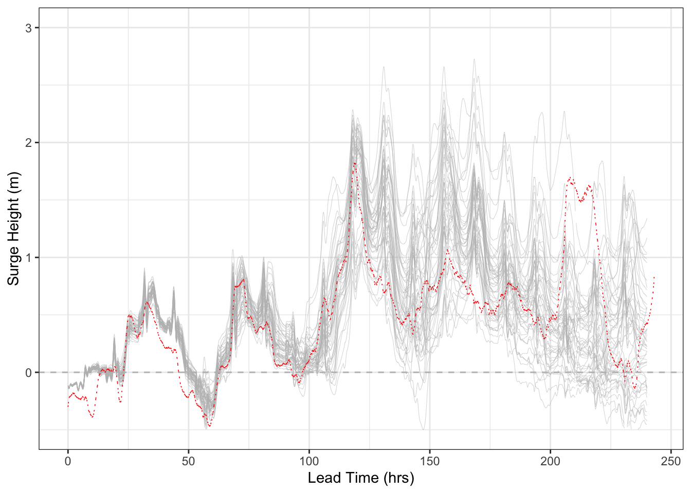
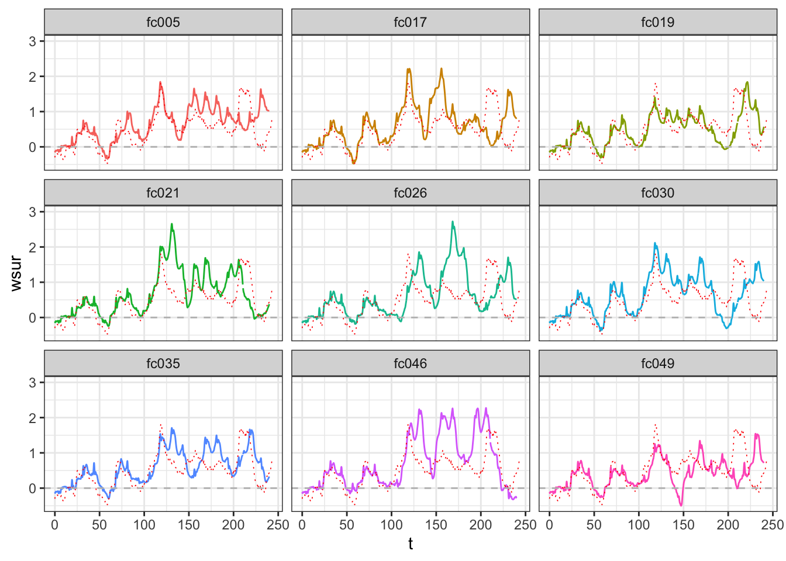

Ensemble Details
Last updated: 2019-10-30
Checks: 6 1
Knit directory: NWO_Project/
This reproducible R Markdown analysis was created with workflowr (version 1.4.0). The Checks tab describes the reproducibility checks that were applied when the results were created. The Past versions tab lists the development history.
The R Markdown file has unstaged changes. To know which version of the R Markdown file created these results, you’ll want to first commit it to the Git repo. If you’re still working on the analysis, you can ignore this warning. When you’re finished, you can run wflow_publish to commit the R Markdown file and build the HTML.
Great job! The global environment was empty. Objects defined in the global environment can affect the analysis in your R Markdown file in unknown ways. For reproduciblity it’s best to always run the code in an empty environment.
The command set.seed(20190805) was run prior to running the code in the R Markdown file. Setting a seed ensures that any results that rely on randomness, e.g. subsampling or permutations, are reproducible.
Great job! Recording the operating system, R version, and package versions is critical for reproducibility.
Nice! There were no cached chunks for this analysis, so you can be confident that you successfully produced the results during this run.
Great job! Using relative paths to the files within your workflowr project makes it easier to run your code on other machines.
Great! You are using Git for version control. Tracking code development and connecting the code version to the results is critical for reproducibility. The version displayed above was the version of the Git repository at the time these results were generated.
Note that you need to be careful to ensure that all relevant files for the analysis have been committed to Git prior to generating the results (you can use wflow_publish or wflow_git_commit). workflowr only checks the R Markdown file, but you know if there are other scripts or data files that it depends on. Below is the status of the Git repository when the results were generated:
Ignored files:
Ignored: .DS_Store
Ignored: .Rhistory
Ignored: .Rproj.user/
Ignored: code/.DS_Store
Ignored: code/rainHelpers/.DS_Store
Ignored: code/rainHelpers/.Rhistory
Ignored: code/rainHelpers/.Rproj.user/
Ignored: code/tidalHelpers/.DS_Store
Ignored: code/tidalHelpers/.Rhistory
Ignored: code/tidalHelpers/.Rproj.user/
Ignored: code/tidalHelpers/R/.DS_Store
Ignored: code/tidalHelpers/man/
Ignored: data/.DS_Store
Ignored: docs/.DS_Store
Ignored: todo/.DS_Store
Untracked files:
Untracked: docs/assets/
Unstaged changes:
Modified: analysis/compound-event-definition.Rmd
Modified: analysis/ensemble_details.Rmd
Modified: analysis/event-based-verification.Rmd
Modified: analysis/index.Rmd
Modified: analysis/univariate_pp.Rmd
Modified: todo/devlist.fdb_latexmk
Modified: todo/devlist.log
Modified: todo/devlist.pdf
Modified: todo/devlist.synctex.gz
Modified: todo/devlist.tex
Note that any generated files, e.g. HTML, png, CSS, etc., are not included in this status report because it is ok for generated content to have uncommitted changes.
These are the previous versions of the R Markdown and HTML files. If you’ve configured a remote Git repository (see ?wflow_git_remote), click on the hyperlinks in the table below to view them.
| File | Version | Author | Date | Message |
|---|---|---|---|---|
| Rmd | 54fb4bb | Kate Saunders | 2019-10-28 | Added in a markdown page visualising the ensemble |
| html | 54fb4bb | Kate Saunders | 2019-10-28 | Added in a markdown page visualising the ensemble |
The following shows examples of the ensemble forecast for 2011-11-29. We observe that at short lead times (< 48 hours) the forecast is underdispersed and that trajectory of the observation is outside that of the raw ensemble. At longer lead times variability within the ensemble increases and there is decrease in skill in the forecast. As a consequence the second peak of the observed surge is not captured. Some skill remains however in that the surge will positively contributes to the total level.

| Version | Author | Date |
|---|---|---|
| 54fb4bb | Kate Saunders | 2019-10-28 |
To fully understand the risk from storm surge, and extension compound events, we are interested in the ability of individual members to replicate features of the observation trajectory. The spaghetti plot of ensemble members is informative of the increasing variability at longer lead times, but it is difficult to distinguish features of individual trajectories. For this reason we have visualised some individual trajectories. These members were chosen as they capture the large surge height later in the forecast period. Ensemble member 19 visually performs well in terms of capturing the general shape of the observed trajectory.

| Version | Author | Date |
|---|---|---|
| 54fb4bb | Kate Saunders | 2019-10-28 |
For the problem of sluice operation, we are concerned with the total water level not just the surge height. The plot below shows ensemble members relative to the observation trajectory for the total water level. The black dashed line is the risk threshold.

| Version | Author | Date |
|---|---|---|
| 54fb4bb | Kate Saunders | 2019-10-28 |
Although ensemble variable increases at longer lead times, there is still some predictability in whether the total level is above the risk threshold. This is visualised in the figure below. The top row is the observations, second row is the deterministic forecast from the ensemble mean, and the remaining rows show the members. We observe in general there is good agreement between the ensemble mean and the observations.

| Version | Author | Date |
|---|---|---|
| 54fb4bb | Kate Saunders | 2019-10-28 |
sessionInfo()R version 3.5.2 (2018-12-20)
Platform: x86_64-apple-darwin15.6.0 (64-bit)
Running under: macOS Mojave 10.14.5
Matrix products: default
BLAS: /Library/Frameworks/R.framework/Versions/3.5/Resources/lib/libRblas.0.dylib
LAPACK: /Library/Frameworks/R.framework/Versions/3.5/Resources/lib/libRlapack.dylib
locale:
[1] en_US.UTF-8/en_US.UTF-8/en_US.UTF-8/C/en_US.UTF-8/en_US.UTF-8
attached base packages:
[1] stats graphics grDevices utils datasets methods base
other attached packages:
[1] tidalHelpers_0.1.0 forcats_0.4.0 stringr_1.4.0
[4] dplyr_0.8.3 purrr_0.3.2 readr_1.3.1
[7] tidyr_1.0.0 tibble_2.1.3 ggplot2_3.2.1
[10] tidyverse_1.2.1
loaded via a namespace (and not attached):
[1] Rcpp_1.0.2 cellranger_1.1.0 pillar_1.4.2 compiler_3.5.2
[5] git2r_0.26.1 workflowr_1.4.0 tools_3.5.2 zeallot_0.1.0
[9] digest_0.6.21 lubridate_1.7.4 jsonlite_1.6 evaluate_0.14
[13] lifecycle_0.1.0 nlme_3.1-141 gtable_0.3.0 lattice_0.20-38
[17] pkgconfig_2.0.3 rlang_0.4.0 cli_1.1.0 rstudioapi_0.10
[21] yaml_2.2.0 haven_2.1.1 xfun_0.10 withr_2.1.2
[25] xml2_1.2.2 httr_1.4.1 knitr_1.25 hms_0.5.1
[29] generics_0.0.2 fs_1.3.1 vctrs_0.2.0 rprojroot_1.3-2
[33] grid_3.5.2 tidyselect_0.2.5 glue_1.3.1 R6_2.4.0
[37] readxl_1.3.1 rmarkdown_1.16 modelr_0.1.5 magrittr_1.5
[41] whisker_0.4 backports_1.1.5 scales_1.0.0 htmltools_0.4.0
[45] rvest_0.3.4 assertthat_0.2.1 colorspace_1.4-1 labeling_0.3
[49] stringi_1.4.3 lazyeval_0.2.2 munsell_0.5.0 broom_0.5.2
[53] crayon_1.3.4